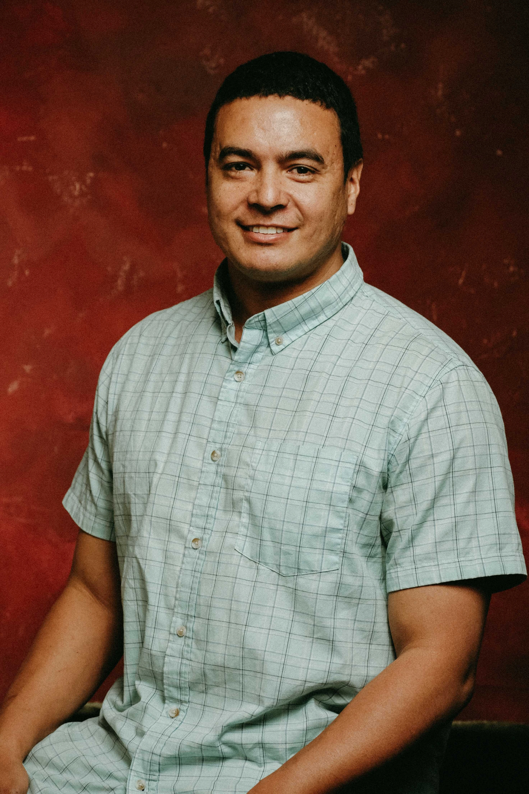
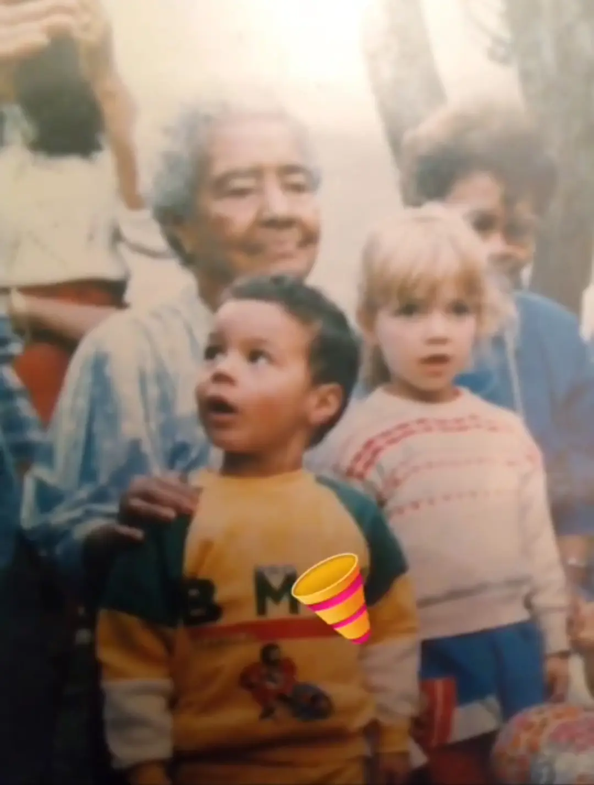
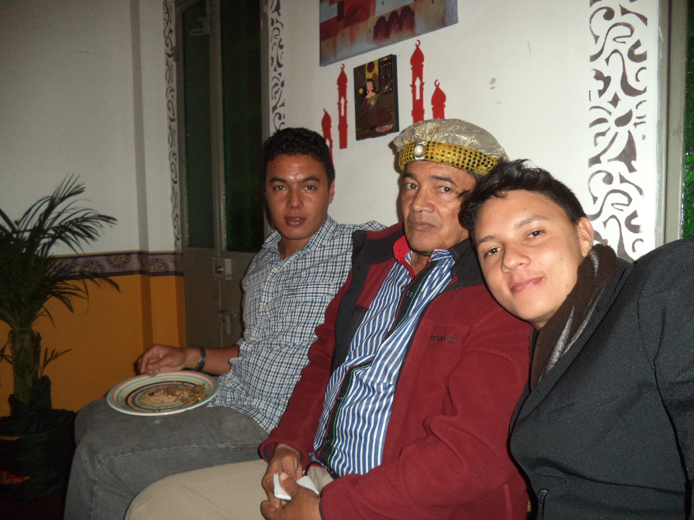
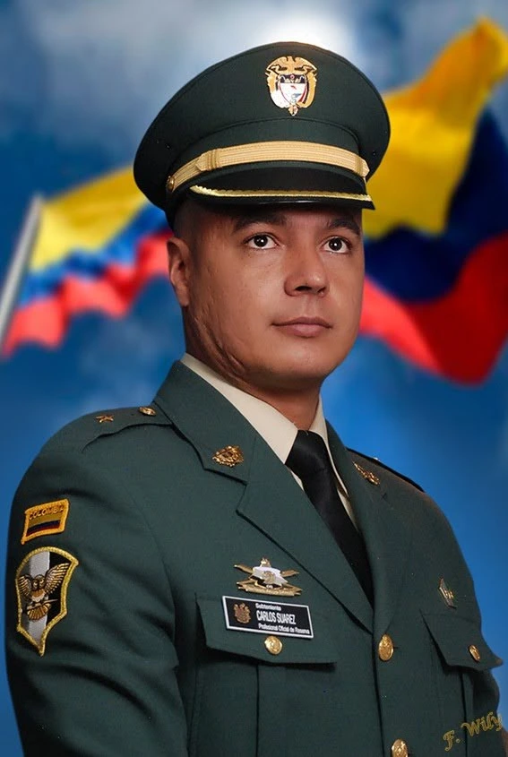
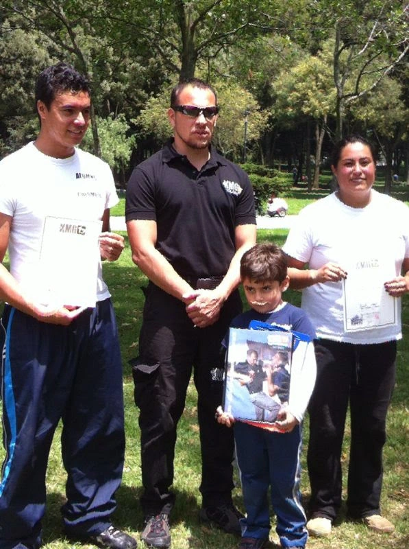
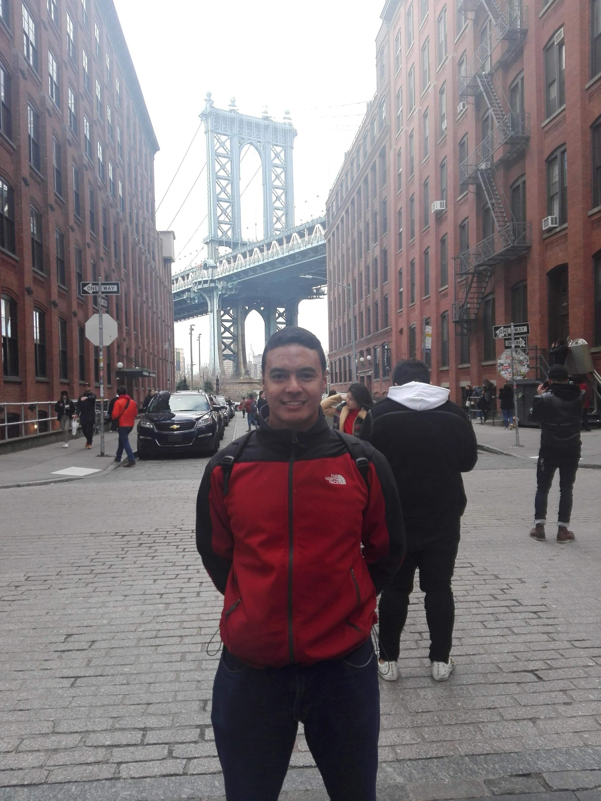

Who I am
Roots and Heritage
Hailing from Colombia, my identity is shaped by a rich blend of Afro-Caribbean vibrancy, Arabic ancestry, and the profound Hispanic/Indigenous heritage that enriches my region's universal spirit.
Formative Years
My upbringing instilled a deep sense of humility as I grew up, experiencing life as an average kid across diverse Colombian landscapes, from the vibrant capital Bogotá to the serene Caribbean coast and its islands.
Early Interests
Early on, I cultivated a strong interest in languages, science, mathematics, and history, balanced by a natural aptitude for sports, especially basketball.
Cultural Exchange and Skills
My early immersion in diverse cultures, including interactions with individuals from the United States, as well as living alongside Jamaican and San Andrés Islanders, significantly honed my English proficiency and cross-cultural communication skills.
Military Service
Driven by a lifelong aspiration to serve, I pursued a path in the military. Through perseverance and commitment across various branches of the Navy and Army, I proudly became an officer in the Reserve Corps.
Continued Learning and Development
Alongside my military journey, I attained seaman training and a certificate in Krav Maga. My dedication to lifelong learning is evident in my proficiency in Arabic (Fusha), allowing me to read and write in its script, and my foundational understanding of the Cyrillic script, though further study was suspended to begin my academic pursuits in Canada.
Reflections and Growth
Reflecting on my path, I've seen many childhood dreams come to fruition, achieved not overnight, but through patience and wisdom. This journey has profoundly deepened my understanding of the value in serving others and in continuous self-development.
Life in Canada
Today, I am building a fulfilling family life in Canada, sharing new experiences and enthusiastically projecting our future together